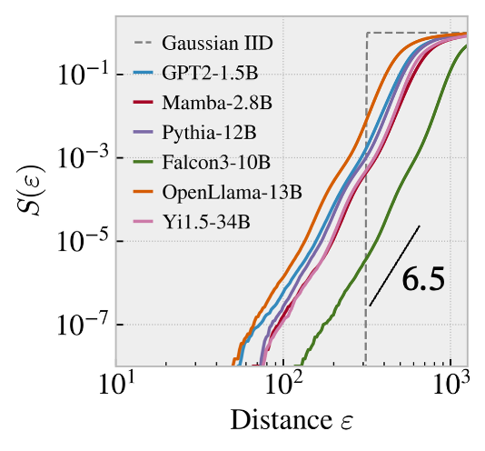
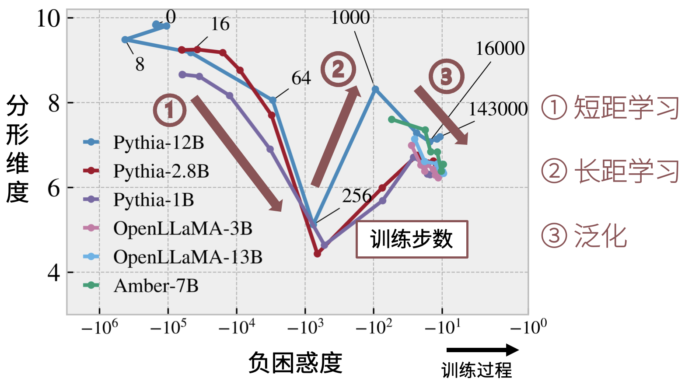

Foundation Models and Complexity
Foundation models produce reasoning, narratives, and plans through local next-token prediction. We use the geometry of probability trajectories to define the multiscale complexity perceived by a model and to track how that structure emerges—or disappears—in natural language, pretraining, hallucination, and generation degeneration.
Keywords correlation dimension · statistical manifolds · multifractality · long-range memory · phase transitions
Model-Induced Statistical Manifolds
Text is a discrete symbolic sequence with no natural Euclidean coordinates for dynamical analysis. Euclidean distances between token identifiers are meaningless, while external embeddings import the biases of a chosen representation model. A language model instead assigns a conditional distribution at every position. A text can therefore be represented as a trajectory on the probability simplex, where two states are close when the model makes similar predictions about what follows.
We define local distance on this statistical manifold with Fisher–Rao geometry and count recurrences across scales. The construction preserves the probabilistic structure of discrete sequences while allowing fractal tools from dynamical systems to characterize long-range organization. The technical challenges include distances on a high-dimensional simplex, finite-text bias, stable selection of scaling intervals, and comparability across vocabularies, architectures, and quantization levels.
If the correlation integral satisfies
then estimates the dynamically active degrees of freedom of the probability trajectory. It is not a substitute for lexical diversity.
Fractal Structure of Natural Language
In our Physical Review Research 2024 paper, we reconstruct the Grassberger–Procaccia method on a statistical manifold. Natural language is not governed by a single scale: local slopes vary with observation scale and form a multifractal pattern. At larger scales, however, estimates across languages, genres, and language models converge near a correlation dimension of 6.5. This is below simple shuffled sequences and above a Barabási–Albert process, placing language between unstructured randomness and low-dimensional network growth.

Controls locate the source of this self-similarity. Shuffling word order raises the average dimension to about 13.0, and randomizing language-model weights likewise destroys the stable structure. The effect is therefore not explained by word frequency alone; it depends on long-range order and on the model’s capacity to recover that order. Applying the same method to symbolic music also separates classical, metal, and rock, all well below white noise.
The contribution is not merely a numerical estimate. It is a complete definition that maps discrete symbols to a statistical manifold and then to long-range recurrence structure, enabling language, music, and other probabilistic sequences to be compared in a common geometry.

From Language Fractals to Model Diagnostics
The NeurIPS 2025 paper applies the same idea directly to trajectories of next-token log probabilities. Perplexity is local: it may decline while a model still hallucinates facts, repeats itself, loses coherence, or produces content-poor text. Correlation dimension instead measures how many long-range structures the model engages while processing a full sequence.
Pretraining exhibits three distinct stages. First, dimension drops as the model learns short-range bigram structure. Second, it rises as longer dependencies emerge. Third, it gradually falls as contexts are compressed into more general representations. Perplexity decreases almost monotonically throughout. Smaller Pythia models do not reliably enter the third stage: their late-training dimension jumps toward 8 while accuracy on context-repetition tasks declines, exposing a generalization instability invisible in the loss curve.

The same observable distinguishes forms of generation failure. In controlled data, normal text has mean dimension 5.04, while repetitive, incoherent, and content-poor text falls to 3.80, 3.96, and 4.51. Perplexity changes in inconsistent directions across these failures. In knowledge-intensive passages, models that retrieve the fact maintain higher-dimensional trajectories; models that imitate the answer format while inventing an entity undergo dimensional collapse.
In random long-text stress tests, robust models maintain or increase dimension while fragile models collapse abruptly. The measurement reaches a Spearman correlation of 0.952 with HelloEval. GPU kernel fusion and vocabulary reduction provide more than a tenfold speedup without additional inference memory; the metric transfers across Transformer and Mamba architectures and changes by less than 3% under 4-bit quantization.
Phase Transitions and the Formation of Capability
Stage changes in training and abrupt dimensional loss during generation suggest a reorganization of effective degrees of freedom. Short-range rules, long-range dependence, and context compression are not simply increments along one smooth learning curve. Yet empirical stages alone do not establish a phase transition.
Further work must treat correlation dimension or its derivative as a candidate order parameter, measure susceptibility, critical slowing down, and enhanced fluctuations near checkpoints, and use finite-size scaling over model and dataset sizes to distinguish continuous transitions, discontinuities, and smooth crossovers. This reframes “when does a capability emerge?” as a testable question: does a complexity shift precede the capability, does a dimensional transition accompany memory retrieval or representation reorganization, and can it guide checkpoint selection?
Applications and Related Papers
Correlation dimension complements perplexity in pretraining monitoring, checkpoint selection, long-text evaluation, online degeneration warning, and analysis of knowledge retrieval. It describes trajectory structure as perceived by the model; it does not independently establish factual correctness or semantic quality and should be combined with task and local-probability measures.
Xin Du and Kumiko Tanaka-Ishii. Correlation Dimension of Auto-Regressive Large Language Models — paper overview. NeurIPS 2025. arXiv
Xin Du and Kumiko Tanaka-Ishii. Correlation Dimension of Natural Language in a Statistical Manifold — paper overview. Physical Review Research, 2024. Journal